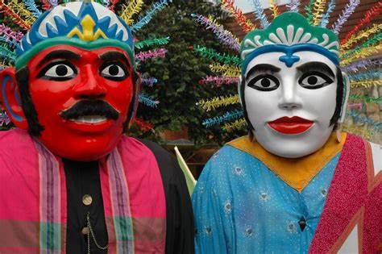

Ondel-ondel adalah boneka besar khas Betawi yang sering tampil dalam pesta rakyat, melambangkan leluhur yang menjaga masyarakat.
Boneka setinggi sekitar 2,5 meter ini terbuat dari anyaman bambu, dengan wajah bermasker dan rambut dari ijuk. Warna wajah merah untuk laki-laki dan putih untuk perempuan. Pertunjukan ini mirip dengan beberapa tradisi di daerah lain.